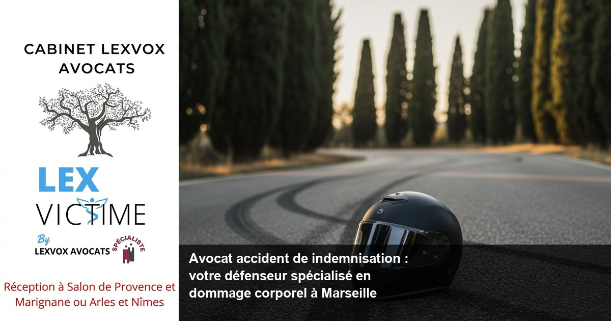

Accident de la route — Nîmes
Avocat accident de moto à Nîmes : indemnisation et dommage corporel

— Par Me Patrice Humbert, avocat au barreau d'Aix-en-Provence
Victime d'un accident de moto à Nimes, vous cherchez un avocat accident de indemnisation spécialisé ? LEXVOX AVOCATS, cabinet d'expertise en dommage corporel depuis plus de 20 ans, vous accompagne dans votre procédure d'indemnisation. Premier avocat certifié IA de France, Me Patrice Humbert défend vos droits pour obtenir la réparation intégrale de vos préjudices. Consultation gratuite 30 minutes au 04 90 54 58 10.
Obtenir la meilleure indemnisation possible : indemnisation des victimes et droit du dommage corporel à Nimes
L'indemnisation des victimes d'accident de moto constitue un enjeu majeur du droit du dommage corporel. À Nimes, comme dans l'ensemble du territoire français, chaque victime d'un accident dispose du droit à une réparation intégrale de ses préjudices.
Comprendre vos droits à l'indemnisation
Après un accident de moto, vous devez savoir que l'indemnisation doit couvrir l'ensemble de vos préjudices corporels et matériels. Le droit du dommage corporel garantit que toute victime d'un accident peut prétendre à une indemnisation juste et complète.
Selon l'expérience du cabinet (20+ ans, centaines de dossiers), les victimes d'accidents de la route sous-estiment souvent l'étendue de leurs droits. L'indemnisation préjudice corporel ne se limite pas aux frais médicaux immédiats mais englobe tous les préjudices : souffrances endurées, préjudice esthétique, incapacité temporaire ou permanente, préjudice professionnel.
Les spécificités de l'accident de moto à Nimes
La zone géographique de Nimes présente des particularités en matière d'accidents de deux-roues. Les axes routiers locaux, notamment l'A9 et les voies d'accès au centre historique, concentrent de nombreux accidents de moto. Le tribunal judiciaire compétent de Nimes traite régulièrement ces dossiers d'indemnisation.
Les établissements hospitaliers locaux comme le CHU de Nimes accueillent les victimes d'accidents de moto. Ces structures médicales jouent un rôle crucial dans l'évaluation des préjudices corporels et la constitution du dossier médical nécessaire à votre indemnisation.
Accompagner par un avocat : un accident de la route et faire appel à un avocat à Nimes
Face aux compagnies d'assurance, l'assistance d'un avocat spécialisé s'avère indispensable. Après un accident de la route, faire appel à un avocat expérimenté protège vos intérêts et optimise votre indemnisation.
L'importance de l'accompagnement juridique
Être accompagner par un avocat dès les premières démarches post-accident change radicalement l'issue de votre dossier. L'avocat spécialisé en indemnisation connaît les stratégies des assureurs et les moyens de contrer leurs tentatives de minoration.
Suite à un accident de moto, les compagnies d'assurance cherchent souvent à proposer des indemnisations insuffisantes. La présence d'un avocat rééquilibre les rapports de force et garantit le respect de vos droits des victimes.
LEXVOX AVOCATS : votre défense à Nimes
Notre cabinet intervient sur la zone de Nimes depuis notre bureau proche, avec une expertise reconnue en droit de la réparation. Nos 4 bureaux (Aix-en-Provence, Salon-de-Provence, Arles, Marignane) nous permettent un maillage territorial optimal pour défendre les victimes d'accidents de la route.
La spécialisation CNB dommage corporel de Me Patrice Humbert garantit un niveau d'expertise élevé. Nos confrères à Paris et Bordeaux reconnaissent notre savoir-faire en matière d'indemnisation accident de moto.
Expert en indemnisation : défense des victimes et réparation intégrale à Nimes
L'expertise en indemnisation requiert une connaissance approfondie des préjudices corporels et de leur évaluation. La défense des victimes d'accidents constitue le cœur de notre mission.
Évaluation complète des préjudices
Chaque poste de préjudice doit faire l'objet d'une évaluation précise. L'expert en indemnisation identifie tous les préjudices subis : préjudice corporel, préjudice moral, préjudice économique, préjudice d'agrément.
L'expertise médicale joue un rôle central dans cette évaluation. Notre médecin-conseil de victimes intervient pour contrer les expertises des assurances et défendre votre intérêt. Cette expertise contradictoire permet d'obtenir une réparation du dommage corporel conforme à la réalité de vos préjudices.
Réparation intégrale : un principe fondamental
La réparation intégrale constitue un principe cardinal du droit civil français. Ce principe impose d'indemniser intégralité de vos préjudices, sans enrichissement ni appauvrissement de la victime.
Selon Légifrance, ce principe trouve ses fondements dans les articles 1240 et suivants du Code civil. La jurisprudence de la Cour de cassation précise régulièrement les contours de cette réparation intégrale.
Accident de la vie : avocat de victimes et avocat spécialisé à Nimes
Les accidents de la vie bouleversent l'existence des victimes et de leur entourage. L'avocat de victimes accompagne cette épreuve avec humanité et professionnalisme.
Comprendre l'impact psychologique
Au-delà des préjudices physiques, un accident de moto génère des conséquences psychologiques importantes. La psychologie de la victime doit être prise en compte dans l'évaluation des préjudices. L'avocat spécialisé veille à ce que ces aspects soient correctement indemnisés.
Les séquelles psychologiques peuvent perdurer longtemps après l'accident. Le préjudice d'angoisse, les troubles du sommeil, la perte de confiance en soi constituent autant de postes d'indemnisation souvent négligés par les assureurs.
Prise en charge globale de la victime
Notre approche intègre tous les aspects de votre situation : médical, juridique, social, professionnel. Cette vision globale permet d'obtenir une indemnisation d'un accident qui tient compte de toutes les répercussions sur votre vie courante.
Les accidents de la vie peuvent également concerner les victimes d'erreurs médicales ou de maladies infectieuses contractées lors de soins. Ces situations relèvent du dommage en droit civil et ouvrent droit à indemnisation selon la loi du 4 mars 2002 relative aux droits des malades et à la qualité du système de santé.
Une indemnisation : assurance et expertise à Nimes
Obtenir une indemnisation juste nécessite une stratégie adaptée face aux compagnies d'assurance. L'expertise technique et la négociation constituent les outils de cette stratégie.
Relations avec les assureurs
La compagnie d'assurance du responsable de l'accident a l'obligation d'indemniser les victimes d'accidents. Cependant, les assureurs cherchent naturellement à limiter leurs indemnisations. Cette tension nécessite l'intervention d'un avocat expert pour défendre les victimes.
Nos relations avec les principaux assureurs permettent une négociation efficace. L'expérience de nos équipes face aux compagnies d'assurance optimise les délais et les montants d'indemnisation obtenus.
Expertise médicale contradictoire
L'expertise médicale constitue un moment clé de la procédure d'indemnisation. L'assureur mandatera un médecin-conseil pour évaluer vos préjudices. Cette expertise doit faire l'objet d'une préparation minutieuse avec votre avocat.
Notre réseau de médecins-conseils couvre tous les métiers de la santé et toutes les spécialités médicales. Cette expertise contradictoire permet de contester les conclusions favorables à l'assureur et d'obtenir une évaluation juste de vos préjudices.
Préjudice et honoraire : votre avocat à Nimes
La question des honoraires d'avocat préoccupe légitimement les victimes d'accidents. Notre politique tarifaire transparente permet à chacun d'accéder à une défense de qualité.
Structure de nos honoraires
Nos honoraires comprennent une part fixe à partir de 700 EUR HT et une part au résultat de 10 à 15%. Cette structure garantit un intérêt partagé : notre rémunération dépend directement de l'indemnisation obtenue.
La consultation initiale de 30 minutes est gratuite. Cette première rencontre permet d'évaluer votre dossier et de vous exposer nos propositions d'intervention.
Rentabilité de l'intervention d'avocat
Selon l'expérience du cabinet (20+ ans, centaines de dossiers), l'intervention d'un avocat spécialiste multiplie généralement par 2 à 4 l'indemnisation obtenue. Cette plus-value compense largement les honoraires d'avocat.
L'indemnisation complémentaire obtenue grâce à notre intervention couvre non seulement nos honoraires mais procure un bénéfice net substantiel à nos clients.
Procédure d'indemnisation à Nimes : les étapes avec LEXVOX AVOCATS
La procédure d'indemnisation suit des étapes précises qu'il convient de respecter pour optimiser votre dossier. Notre accompagnement couvre chaque étape de la procédure.
Phase amiable
La négociation amiable constitue la première voie à explorer. Cette phase permet généralement d'obtenir une indemnisation dans des délais raisonnables, sans les aléas et les coûts d'une procédure judiciaire.
Chaque étape de la procédure amiable doit être préparée : constitution du dossier médical, rassemblement des justificatifs, évaluation des préjudices, négociation avec l'assureur.
Phase judiciaire si nécessaire

Vos questions sur avocat accident de indemnisation à nimes : expert en dommage
Synthèse : votre droit à la réparation intégrale ?
Le droit du dommage corporel garantit à toute victime d'un accident le droit à une indemnisation intégrale de ses préjudices. L'indemnisation préjudice corporel ne saurait se limiter aux seuls frais médicaux, mais doit englober tous les préjudices subis. Un avocat spécialiste en la matière s'avère indispensable pour défendre efficacement les droits d'une victime d'un accident. L'indemnisation intégrale constitue l'objectif premier de toute procédure d'indemnisation accident. Pour obtenir une indemnisation conforme à vos préjudices, l'arrêt de travail et ses conséquences financières doivent être correctement évalués. La réparation du dommage corporel exige une expertise approfondie que seul un professionnel expérimenté peut fournir. Se faire accompagner par un avocat dès les premières démarches protège les droits des victimes face aux stratégies des assureurs. L'avocat spécialisé en indemnisation connaît les techniques pour optimiser votre dossier. Un avocat expérimenté saura identifier tous les postes de préjudices et en assurer l'évaluation juste. La réparation du préjudice corporel nécessite l'intervention d'un avocat expert maîtrisant cette spécialité complexe. Pour défendre les victimes efficacement, il faut faire appel à un avocat spécialisé dès que possible suite à un accident. Le médecin-conseil de victimes joue un rôle crucial dans l'évaluation de chaque poste de préjudice pour obtenir la meilleure indemnisation possible. Une indemnisation juste résulte d'un travail minutieux sur tous les aspects du dossier. Les indemnisations varient considérablement selon la qualité de la défense assurée. Les accidents de la vie bouleversent l'existence et justifient une indemnisation complémentaire pour les préjudices annexes. Toute victime d'un accident peut prétendre à réparation, que ce soit les victimes d'accidents de la route ou d'autres types d'accidents. La présence d'un avocat lors des négociations change radicalement l'issue du dossier. L'assistance d'un avocat permet d'éviter les pièges tendus par les assureurs et d'optimiser l'indemnisation d'un accident. Les victimes d'accidents doivent savoir que les victimes d'accidents bénéficient de droits étendus. Dès qu'un accident survient, il convient d'identifier le responsable de l'accident pour engager sa responsabilité. Face à une compagnie d'assurance, la défense des victimes d'accidents nécessite une stratégie adaptée. Chaque victime d'accident doit connaître les circonstances de l'accident pour optimiser sa défense. La procédure d'indemnisation comporte des étapes précises que les victimes d'accident doivent respecter. En cas d'accident, les enjeux financiers justifient pleinement l'intervention d'un spécialiste.
Procédure d'indemnisation à Nimes : les étapes avec LEXVOX ?
Notre accompagnement débute dès votre premier contact au 04 90 54 58 10. La consultation gratuite de 30 minutes permet d'analyser votre situation et de définir la stratégie optimale pour votre dossier.
Constitution du dossier initial ?
Nous rassemblons tous les éléments nécessaires : constat amiable, certificats médicaux, témoignages, photos, justificatifs financiers. Cette phase documentaire conditionne la solidité de votre dossier d'indemnisation.
Expertise médicale et évaluation des préjudices ?
Notre médecin-conseil intervient pour évaluer précisément vos préjudices corporels. Cette expertise contradictoire garantit une évaluation juste, loin des minimisations habituelles des assureurs.
Négociation avec l'assureur ?
Fort de notre expertise technique et de notre connaissance du marché, nous négocions avec l'assureur pour obtenir la meilleure indemnisation possible. Notre réputation auprès des compagnies d'assurance facilite ces négociations.
Suivi jusqu'au règlement final ?
Nous vous accompagnons jusqu'au règlement définitif de votre indemnisation. Cette phase finale nécessite une vigilance particulière pour éviter toute contestation ultérieure. **Dans quels cas puis-je bénéficier d'une indemnisation ONIAM ?** Selon [l'ONIAM](https://www.oniam.fr), l'Office National d'Indemnisation des Accidents Médicaux intervient notamment pour les victimes d'erreurs médicales. Une maladie infectieuse contractée lors de soins peut ouvrir droit à cette indemnisation spécifique, distincte des accidents de la route classiques. **Comment la loi de 2002 protège-t-elle les victimes ?** La loi du 4 mars 2002 relative aux droits des malades et à la qualité du système de santé a renforcé les droits des patients victimes d'accidents médicaux. Cette loi facilite l'indemnisation des dommages liés aux soins dispensés par les professionnels de santé. **Quelle différence entre droit civil et droit pénal dans mon dossier ?** Le dommage en droit civil vise votre indemnisation personnelle, tandis que le droit pénal sanctionne l'auteur de l'accident. Ces deux procédures sont distinctes : vous pouvez obtenir une indemnisation civile même en l'absence de condamnation pénale. **Comment évaluer mon préjudice d'incapacité permanente ?** L'évaluation se base sur un taux d'incapacité déterminé par expertise médicale, appliqué à votre situation personnelle (âge, profession, activités). Ce calcul complexe nécessite l'assistance d'un avocat spécialisé pour éviter les sous-évaluations. **Puis-je contester une expertise judiciaire défavorable ?** Oui, des recours existent : demande d'explications à l'expert, dires après expertise, appel du jugement rendu sur la base de cette expertise. Ces procédures techniques requièrent l'assistance d'un avocat expérimenté. **Comment gérer les relations avec ma propre assurance ?** Votre assureur peut intervenir au titre de la garantie protection juridique ou des garanties personnelles (garantie du conducteur). Cette intervention complémentaire peut améliorer votre indemnisation globale, mais nécessite une coordination experte. --- **Vous êtes victime d'un accident de moto à Nimes ?** Ne laissez pas les assureurs minimiser vos droits. LEXVOX AVOCATS, expert avocat accident de indemnisation depuis plus de 20 ans, défend votre droit à la réparation intégrale. **Consultation gratuite 30 minutes** - Appelez le **04 90 54 58 10** ou contactez-nous à **contact@avocat-lexvox.com** *Cabinet LEXVOX AVOCATS - Me Patrice Humbert, premier avocat certifié IA de France, spécialisation CNB dommage corporel. Bureaux à Aix-en-Provence, Salon-de-Provence, Arles, Marignane. Intervention sur Nimes et région.*
Première consultation gratuite — 30 min
Besoin d'un avocat spécialisé à Nîmes ? Nous évaluons votre dossier gratuitement et vous indiquons vos droits à réparation.
Cabinet LEXVOX AVOCATS — Me Patrice Humbert — Spécialisation CNB dommage corporel — Bureaux à Aix-en-Provence, Salon-de-Provence, Arles et Marignane